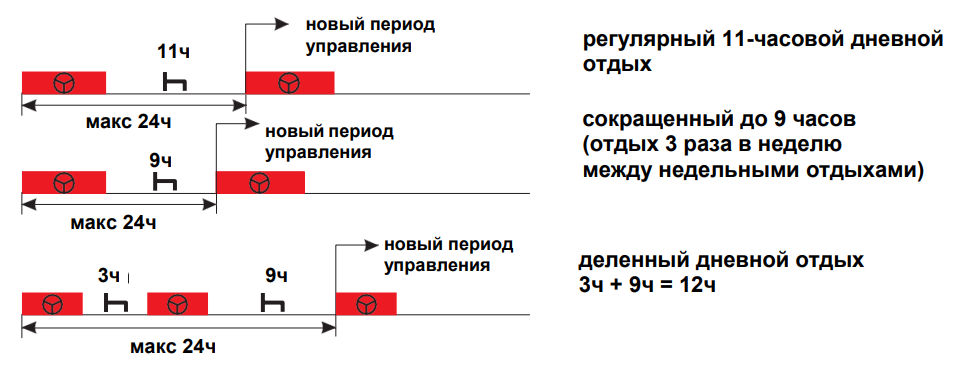

Согласно европейским правилам, регулярный отдых водителя должен составлять 11 часов в сутки.
Допускается сокращение времени отдыха до 9 часов в сутки, но делать это можно только 3 раза неделю.
В случае если в течении рабочей смены была пауза не меннее 3 часов, отдых можно сократить до 9 ч. (неограниченное количество раз в неделю)
